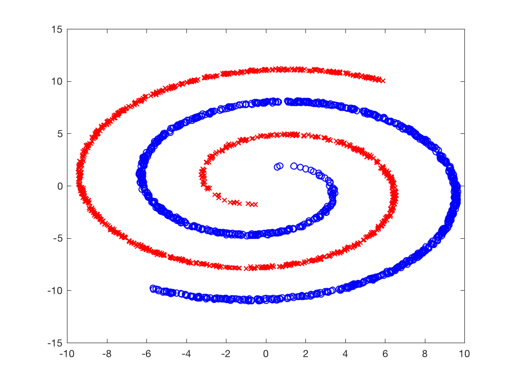

gsp_twospirals(N, degrees, start, noise); gsp_twospirals(N, degrees, start); gsp_twospirals(N, degrees); gsp_twospirals(N); gsp_twospirals();
Note that for noise=0, there is no noise and at noise=1 the spirals will start overlapping
This function is adaptated from: http://stackoverflow.com/questions/16146599/create-artificial-data-in-matlab and http://stackoverflow.com/questions/5837572/generate-a-random-point-within-a-circle-uniformly
Example:
[x,y] = gsp_twospirals(); figure(); plot(x(y>0,1),x(y>0,2),'xr'); hold on plot(x(y<=0,1),x(y<=0,2),'ob'); hold off